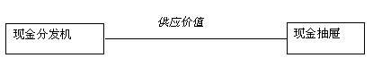
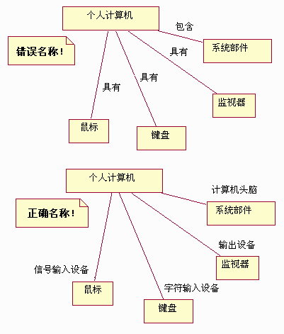
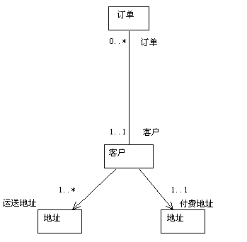
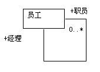
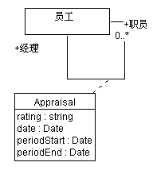

| 指南：关联 |
 |
|
关联关联代表具有不同类的对象之间的结构关系；它们代表存在一段时间的两个或更多类的实例之间的连接。将其与瞬态链接（例如，仅存在一个操作的持续时间）相对比。后者的情况可以改为使用协作建模，其中这些链接仅存在于特定的受限环境中。 您可以使用关联来显示对象了解其他对象。有时，对象之间必须彼此引用以能够交互，例如，彼此发送消息；因此，在一些情况下，关联可能是从时序图或通信图中的交互模式中得出的。 关联名称多数关联是二元的（在恰好两个类之间存在），并用作连接类符号对的可靠路径。可能关联有名称，或者可能关联角色有名称。角色名称更好，因为它们传达更多信息。在只有一个角色可以命名的情况下，角色仍然比关联名称好，只要预计该关联是单向的（从与该角色名称相关联的对象开始）。 关联通常在存在足够信息以正确命名角色前的分析期间命名。在使用关联名称的地方，关联名称应该反映关系的目的，且应当是一个动词短语。关联的名称放置在关联路径上或邻近关联路径。 示例 在 ATM 中，现金抽屉提供现金分发机分发的钱。为了使现金分发机能分发钱款，它必须保持引用现金抽屉对象；类似地，如果发现现金抽屉没有钱了，则必须通知现金分发机对象，所以 现金抽屉必须保持引用现金分发机。 关联对这种引用建模。  现金分发机和现金抽屉之间的关联，命名为供应价值。 关联名称如果选择不当，会令人迷惑和误解。以下示例说明了好的命名和坏的命名。在第一个图中，使用的是关联名称，尽管它们在语法上正确（使用动词短语），但它们不能传达关于这种关系的很多信息。在第二个图中，使用的是角色名称，它们更多地传达了关联中的参与的性质。  关联名称和角色名称的使用好坏的示例 角色关联的每一端都是一个角色，指定一个类在关联中所扮演的角色。每个角色必须有名称，与类相对的角色名称必须是唯一的。角色名称应该是一个名词，表示被关联对象与关联对象相关的角色。例如，在与课程的关联中， 教师的适当角色名称可以是讲师；请避免诸如“有”和“包含”之类的名称，因为它们不能添加关于这些类之间的关系的任何信息。 请注意使用关联名称和角色名称是互相排斥的：不能同时使用关联名称和角色名称。角色名称比关联名称更好，没有足够信息以正确命名角色的情况下除外（这种情况在分析中很常见；在设计角色名称中应始终使用）。缺乏好的角色名称意味着模型不完整或格式不好。 角色名称放置在关联线末端旁边。 示例 考虑订单输入系统中类之间的关系。一个客户可以有两种不同的地址：一个发送账单的地址，若干发送订单的地址。结果，我们在客户和地址之间有两个关联，如下所示。这些关联是使用被关联的地址对客户所扮演的角色来标注的。
客户、地址和订单之间的关联，同时显示角色名称和多重性 多重性对于每个角色，您都可以指定其类的多重性，即该类的多少个对象可以与另一个类的一个对象相关联。使用角色上的文本表达式表示多重性。 表达式是一个逗号分隔的整数范围列表。一个整数范围由一个整数（下限）、两个圆点和一个整数（上限）来表示；单个整数也是有效的范围，而符号 '*' 表示“许多”，即对象的数量不受限制。符号“*”自身等于“0..*”，即任何数字（包括空）；这是缺省值。可选的标量角色具有多重性 0..1。 示例 在上例中，显示了订单和客户之间关联以及客户和地址之间关联的多重性。解释该图 － 它显示的是：订单必须有相关联的客户（在客户一端，多重性为 1..1），但是客户可能没有任何订单（在订单一端，多重性为 0..*）。而且，一个客户具有一个开票地址，但有一个或多个装运地址。为了减少标记混乱，如果省略多重性，则可以假设多重性为 1..1。 可导航性角色的可导航性属性表示可以通过关联关系从关联类导航到目标类上。这可以若干方式实施：通过直接对象引用、通过关联数组、散列表，或允许一个对象引用另一个对象的任何其他实施技术。可导航性由一个开放的箭头表示，该箭头放置在关联线靠近目标类（要导航至的类）的目标端。可导航性属性的缺省值为 true。 示例 在订单输入示例中，订单与客户之间可以进行双向导航：订单必须知道是哪一位客户下的订单，客户必须知道他下了哪些订单。当不显示任何箭头时，则假设该关联在两个方向都可以导航。 在客户与地址之间的关联关系中，客户必须知道其地址，但地址却不知道哪些客户（或其他类，因为许多事物都有地址）与该地址相关联。结果，关联关系中客户一端的可导航形属性被关闭，图示如下：  更新过的订单输入系统类，显示关联的可导航性。 自关联有时，一个类与其自身有关联。这不一定意味着该类的实例与其自身有关联；更常见的是，意味着该类的一个实例与同一类的其他实例有关联。在自我关联的情况下，角色名称对于区分该关联的目的是必要的。 示例 请考虑涉及类雇员的以下自关联关系：  在这种情况下，一个雇员可能与其他雇员有关联；如果他们确实与其他雇员有关联，则他们是经理，其他雇员是他们的职员。该关联在两个方向都可以导航，因为雇员知道他们的经理，经理知道其职员。 多重关联在类之间得出两个关联意味着对象相关两次；一个给定的类可以通过每个关联链接到不同的对象。每个关联都是独立的，并通过角色名称区别。如上所示，客户可以与同一个类的不同实例有关联，每一个关联都具有不同的角色名称。 为角色排序当关联的多重性大于 1 时，被关联的实例会被排序。角色的排序属性表示参与关联的那些实例要进行排序。在缺省情况下，它们并不进行排序。模型并未指定如何对排序进行维护；用于对排序后的关联进行更新的操作必须指定更新元素的插入位置。 链接关联的单个实例称为链接；因而链接是实例之间的一种关系。消息可以通过链接发送，链接可以表示对象之间的引用和聚集。 请参阅技术：通信图以了解更多信息。 关联类关联类是一种也有类属性（例如属性、操作和关联）的关联。它是通过从关联路径到保存关联的属性、操作和关联的类符号之间画一条虚线而显示的。这些属性、操作和关联适用于原关联本身。关联中的每个链接都有所示的属性。关联类最常见的使用是协调多对多关系（请参阅以下示例）。原则上，关联的名称和类的名称应该相同，但是如果需要的话，也允许不同的名称。退化的关联类仅包含该关联的属性；在这种情况下您可以省略关联类名称以不再强调其不同。 示例 扩展前面的雇员示例，考虑一个雇员（职员）为另一个雇员（经理）工作的情况。经理对职员执行定期评估，反映他们在一个具体时间段的绩效。 这种评估不可能是经理或职员单方面的属性，但是我们可以将该信息与关联本身关联起来，如下所示：  关联类评估获取与关联本身相关的信息 限定关联限定词被用于进一步约束和定义与另一个实例相关联的一组实例；一个对象和一个限定词值标识该关联的一组唯一的对象，形成组合键。限定通常减少了相对角色的多重性；净多重性显示与第一个类和给定限定词值相关联的相关类的实例的数目。限定词被表示为关联中与限定类连接的一端的小方框。它们是关联（而不是类）的一部分。一个限定词方框可能包含多个限定词值；限定是基于整个值列表的。 限定关联是关联属性的一种变体。 示例 考虑对订单商品和产品之间关联的以下改进：一个订单商品与订购的产品有关联。每个订单商品引用一个并且仅引用一个产品，而一个产品可能在许多订单商品上被订购。通过使用限定词产品代码限定该关联，我们还指出每个产品具有一个唯一的产品代码，而 订单商品则是通过此代码与产品相关联的。
订单商品和产品之间的关联有限定词产品代码。 多元关联关系多元关联是在三个或更多类之间的关联，其中一个类可以出现多次。多元关联被表示为到每个参与类都有一个关联路径的大菱形。这是关联的传统实体关系模型符号。为了更简洁，二元形式不画有菱形，因为它们是实际模型中存在的大多数关联。 多元关联非常少见，也可以通过将它们提升为类来建模。多元关联也可以有一个关联类；这通过从菱形到类符号画一条虚线来显示。角色可能具有角色名称，但是多重性更复杂，最好通过列出备选关键字来指定。如果给定多重性，多重性代表对应于给定元组的其他 N-1 个对象的实例的数目。多数对多元关联的使用可以通过使用限定关联或关联类来消除。它们也可以由普通类替换，尽管这会丢失以下约束：即对给定元组的参与对象只能有一个链接。 |

© Copyright IBM Corp. 1987, 2006. All Rights Reserved. |